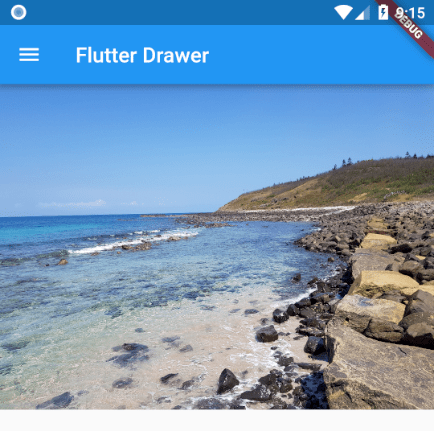

<!DOCTYPE html><html><head><meta name="generator" content="Hexo 3.9.0"><meta charset="utf-8"><title>Flutter 載入圖片 | Titangene Blog</title><meta name="description" content="利用 blog 紀錄學習歷程"><meta http-equiv="X-UA-Compatible" content="IE=edge"><meta name="viewport" content="width=device-width,initial-scale=1,maximum-scale=1"><meta name="HandheldFriendly" content="True"><meta name="apple-mobile-web-app-capable" content="yes"><meta name="author" content="Titangene"><link rel="shortcut icon" href="/favicon.ico"><link rel="alternate" href="/atom.xml" title="Titangene Blog"><meta name="description" content="要如何在 Flutter 內載入圖片？這篇做個小記錄。"><meta name="keywords" content="Dart"><meta property="og:type" content="article"><meta property="og:title" content="Flutter 載入圖片"><meta property="og:url" content="https://titangene.github.io/article/flutter-loading-images.html"><meta property="og:site_name" content="Titangene Blog"><meta property="og:description" content="要如何在 Flutter 內載入圖片？這篇做個小記錄。"><meta property="og:locale" content="zh-tw"><meta property="og:image" content="https://titangene.github.io/images/cover/flutter.jpg"><meta property="og:updated_time" content="2019-04-30T15:57:23.428Z"><meta name="twitter:card" content="summary_large_image"><meta name="twitter:title" content="Flutter 載入圖片"><meta name="twitter:description" content="要如何在 Flutter 內載入圖片？這篇做個小記錄。"><meta name="twitter:image" content="https://titangene.github.io/images/cover/flutter.jpg"><meta name="twitter:creator" content="@titangeneTW"><meta name="twitter:site" content="@titangene_blog"><meta property="fb:admins" content="100001106016019"><meta property="fb:app_id" content="2470546159839111"><meta property="og:image:width" content="1200"><meta property="og:image:height" content="630"><meta name="google-site-verification" content="AaJ39L7h-nWwJjXJMhAMtXSF6H6BUgGWXC80kYvLic8"><link rel="stylesheet" href="//fonts.googleapis.com/css?family=Inconsolata|Titillium+Web"><link href="https://fonts.googleapis.com/css?family=Source+Code+Pro&display=swap" rel="stylesheet"><link rel="stylesheet" href="//use.fontawesome.com/releases/v5.7.0/css/all.css" integrity="sha384-lZN37f5QGtY3VHgisS14W3ExzMWZxybE1SJSEsQp9S+oqd12jhcu+A56Ebc1zFSJ" crossorigin="anonymous"><link rel="stylesheet" href="/style.css"><script async src="https://www.googletagmanager.com/gtag/js?id=UA-129758206-1"></script><script>!function(a){function n(){dataLayer.push(arguments)}a.dataLayer=a.dataLayer||[],n("js",new Date),n("config","UA-129758206-1")}(window)</script><script>function setLoadingBarProgress(e){document.getElementById("loading-bar").style.width=e+"%"}</script></head></html><body><div id="loading-bar-wrapper"><div id="loading-bar"></div></div><script>setLoadingBarProgress(20)</script><header class="l_header"><div class="wrapper"><div class="nav-main container container--flex"><a class="logo flat-box" href="/">Titangene Blog</a><div class="menu"><ul class="h-list"><li><a class="flat-box nav-home" href="/">Home</a></li><li><a class="flat-box nav-archives" href="/archives">Archives</a></li></ul><div class="underline"></div></div><div class="m_search"><form name="searchform" class="form u-search-form"><input type="text" class="input u-search-input" placeholder="Search"> <i class="fas fa-search"></i></form></div><ul class="switcher h-list"><li class="s-search"><a class="fas fa-search" href="javascript:void(0)"></a></li><li class="s-menu"><a class="fas fa-bars" href="javascript:void(0)"></a></li></ul></div><div class="nav-sub container container--flex"><a class="logo flat-box" href="/">Titangene Blog</a><ul class="switcher h-list"><li class="s-comment"><a class="far fa-comment-alt" href="javascript:void(0)"></a></li><li class="s-top"><a class="fas fa-arrow-up" href="javascript:void(0)"></a></li><li class="s-toc"><a class="fas fa-list-ol" href="javascript:void(0)"></a></li></ul></div></div></header><aside class="menu-phone"><nav><a href="/" class="nav-home nav">Home </a><a href="/archives" class="nav-archives nav">Archives</a></nav></aside><script>setLoadingBarProgress(40)</script><div class="l_body"><div class="container clearfix"><div class="l_main"><article id="post-flutter-loading-images" class="post white-box article-type-post" itemscope itemprop="blogPost"><section class="meta"><h2 class="title"><a href="/article/flutter-loading-images.html">Flutter 載入圖片</a></h2><span class="post-time"><span class="post-meta-item-icon"><i class="fa fa-calendar"></i> </span><span class="post-meta-item-text">發表於</span> <time title="建立時間：2018-12-31 21:10:00" itemprop="dateCreated datePublished" datetime="2018-12-31T21:10:00+08:00">2018-12-31 </time><span class="post-meta-divider">|</span> <span class="post-meta-item-icon"><i class="fa fa-calendar-check"></i> </span><span class="post-meta-item-text">更新於</span> <time title="修改時間：2019-04-30 23:57:23" itemprop="dateModified" datetime="2019-04-30T23:57:23+08:00">2019-04-30</time></span> <span class="comments-count"><span class="post-meta-divider">|</span> <span class="post-meta-item-icon"><i class="fas fa-comment"></i> </span><a href="https://titangene.github.io/article/flutter-loading-images.html#disqus_thread" class="article-comment-count" data-disqus-identifier="article/flutter-loading-images.html" itemprop="discussionUrl"></a></span><div class="post-category"><span class="post-meta-item-icon"><i class="fa fa-folder"></i> </span><span class="post-meta-item-text">分類於</span> <span itemprop="about" itemscope itemtype="http://schema.org/Thing"><a href="/categories/flutter/" itemprop="url" rel="index"><span itemprop="name">Flutter</span></a>, <a href="/categories/flutter/mobile-app/" itemprop="url" rel="index"><span itemprop="name">Mobile App</span></a></span></div></section><section class="toc-wrapper"><ol class="toc"><li class="toc-item toc-level-2"><a class="toc-link" href="#指定資源"><span class="toc-text">指定資源</span></a></li><li class="toc-item toc-level-2"><a class="toc-link" href="#載入圖片"><span class="toc-text">載入圖片</span></a></li><li class="toc-item toc-level-2"><a class="toc-link" href="#參考連結"><span class="toc-text">參考連結</span></a></li></ol></section><section class="article typo"><div class="article-entry" itemprop="articleBody"><p></p><p>要如何在 Flutter 內載入圖片？這篇做個小記錄。</p><a id="more"></a><h2 id="指定資源"><a class="header-anchor" href="#指定資源"></a>指定資源</h2><p>Flutter 是在根目錄內的 <code>pubspec.yaml</code> 檔案來設定應用程式所需的資源，設定的資源沒有順序關係。</p><p>若要指定某些資源，資源的路徑是相對於 <code>pubspec.yaml</code> 檔案的相對路徑：</p><figure class="highlight yaml"><table><tr><td class="gutter"><pre><span class="line">1</span><br><span class="line">2</span><br><span class="line">3</span><br><span class="line">4</span><br></pre></td><td class="code"><pre><code class="hljs yaml"><span class="hljs-attr">flutter:</span><br>  <span class="hljs-attr">assets:</span><br>    <span class="hljs-bullet">-</span> <span class="hljs-string">assets/images/avatar.jpg</span><br>    <span class="hljs-bullet">-</span> <span class="hljs-string">assets/images/background.jpg</span><br></code></pre></td></tr></table></figure><p>也可以指定某個目錄，代表可以存取到這個目錄下的所有資源，但記得要在目錄的最後加上 <code>/</code> 這個符號：</p><figure class="highlight yaml"><table><tr><td class="gutter"><pre><span class="line">1</span><br><span class="line">2</span><br><span class="line">3</span><br></pre></td><td class="code"><pre><code class="hljs yaml"><span class="hljs-attr">flutter:</span><br>  <span class="hljs-attr">assets:</span><br>    <span class="hljs-bullet">-</span> <span class="hljs-string">assets/</span><br></code></pre></td></tr></table></figure><p>若要存取子目錄內的資源，請記得要另外為子目錄設定，例如：</p><figure class="highlight yaml"><table><tr><td class="gutter"><pre><span class="line">1</span><br><span class="line">2</span><br><span class="line">3</span><br><span class="line">4</span><br></pre></td><td class="code"><pre><code class="hljs yaml"><span class="hljs-attr">flutter:</span><br>  <span class="hljs-attr">assets:</span><br>    <span class="hljs-bullet">-</span> <span class="hljs-string">assets/</span><br>    <span class="hljs-bullet">-</span> <span class="hljs-string">assets/images/</span><br></code></pre></td></tr></table></figure><h2 id="載入圖片"><a class="header-anchor" href="#載入圖片"></a>載入圖片</h2><p>可使用 <code>Image.asset()</code> 來載入圖片，裡面的參數就是圖片的路徑：</p><figure class="highlight dart"><table><tr><td class="gutter"><pre><span class="line">1</span><br><span class="line">2</span><br><span class="line">3</span><br><span class="line">4</span><br><span class="line">5</span><br></pre></td><td class="code"><pre><code class="hljs dart">Widget build(BuildContext context) &#123;<br>  <span class="hljs-comment">// ...</span><br>  <span class="hljs-keyword">return</span> Image.asset(<span class="hljs-string">'assets/images/background.jpg'</span>);<br>  <span class="hljs-comment">// ...</span><br>&#125;<br></code></pre></td></tr></table></figure><p>或是在 <code>Image()</code> 內的 <code>image</code> 參數使用 <code>AssetImage()</code>：</p><figure class="highlight dart"><table><tr><td class="gutter"><pre><span class="line">1</span><br><span class="line">2</span><br><span class="line">3</span><br><span class="line">4</span><br><span class="line">5</span><br><span class="line">6</span><br><span class="line">7</span><br></pre></td><td class="code"><pre><code class="hljs dart">Widget build(BuildContext context) &#123;<br>  <span class="hljs-comment">// ...</span><br>  <span class="hljs-keyword">return</span> Image(<br>    image: AssetImage(<span class="hljs-string">'assets/images/background.jpg'</span>),<br>  );<br>  <span class="hljs-comment">// ...</span><br>&#125;<br></code></pre></td></tr></table></figure><p>最後顯示的結果會一樣：</p><p></p><h2 id="參考連結"><a class="header-anchor" href="#參考連結"></a>參考連結</h2><ul><li><a href="https://flutter.io/docs/development/ui/assets-and-images" target="_blank" rel="noopener">Adding assets and images - Flutter</a></li></ul></div><div class="article-tags tags"><a href="/tags/dart/" title="Dart">Dart</a></div></section><div class="article-share-links"><span>分享：</span> <a class="fab fa-facebook-f" title="Facebook" target="_blank" href="javascript:window.open('https://www.facebook.com/sharer.php?u=https%3A%2F%2Ftitangene.github.io%2Farticle%2Fflutter-loading-images.html', 'Share on Facebook','width=600, height=600')"></a> <a class="fab fa-twitter" title="Twitter" target="_blank" href="javascript:window.open('https://twitter.com/share?url=https%3A%2F%2Ftitangene.github.io%2Farticle%2Fflutter-loading-images.html&amp;text=Flutter 載入圖片&amp;hashtags=Dart&amp;via=titangene_blog', 'Share on Twitter','width=600, height=260')"></a> <a class="fab fa-linkedin-in" title="Linkedin" target="_blank" href="javascript:window.open('https://www.linkedin.com/shareArticle?mini=true&amp;url=https%3A%2F%2Ftitangene.github.io%2Farticle%2Fflutter-loading-images.html&amp;title=Flutter 載入圖片', 'Share on Linkedin','width=600, height=600')"></a> <a class="fab fa-facebook-messenger" title="Facebook Messenger" target="_blank" href="javascript:window.open('http://www.facebook.com/dialog/send?app_id=2470546159839111&amp;link=https%3A%2F%2Ftitangene.github.io%2Farticle%2Fflutter-loading-images.html&amp;display=popup&amp;redirect_uri=https%3A%2F%2Fwww.facebook.com%2Fdialog%2Freturn%2Fclose%23_%3D_', 'Send in Messenger','width=600, height=600')"></a> <a class="fab fa-telegram-plane" href="https://telegram.me/share/url?url=https%3A%2F%2Ftitangene.github.io%2Farticle%2Fflutter-loading-images.html&text=Flutter 載入圖片" target="_blank"></a></div><nav id="article-nav"><a href="/article/python-logging.html" id="article-nav-prev" class="article-nav-link-wrap" title="Python - 日誌 (logging) 模組" rel="prev"><strong class="article-nav-caption">Prev</strong><p class="article-nav-title">Python - 日誌 (logging) 模組</p><i class="fas fa-angle-left"></i> </a><a href="/article/hexo-markdown-it.html" id="article-nav-next" class="article-nav-link-wrap" title="將 Hexo 的 Markdown 渲染引擎換成 markdown-it" rel="next"><strong class="article-nav-caption">Next</strong><p class="article-nav-title">將 Hexo 的 Markdown 渲染引擎換成 markdown-it</p><i class="fas fa-angle-right"></i></a></nav><section id="list_related_posts"><h2>相關文章</h2><ul class="related-posts"><li class="related-posts-item"><a class="related-posts-link" href="/article/flutter-custom-fonts.html">Flutter 自訂字型</a><div class="related-posts-item-abstract">雖然 Android 和 iOS 內建都有字型，但常有自訂字型的需求，所以這篇會教你如何在 Flutter 使用自訂字型。將字型檔放入專案資料夾內此範例是放在 ./assets/fonts 資料夾內：1234567ass</div></li><li class="related-posts-item"><a class="related-posts-link" href="/article/flutter-install-on-windows.html">Flutter 環境建置 (Windows)</a><div class="related-posts-item-abstract">最近剛接觸 Flutter，於是就把在 Windows 上建置環境的記錄寫成一篇筆記，裡面包括 Android Studio 和 VS Code 的開發流程。詳情可參考官方連結：Get Started: Install</div></li></ul></section><section class="comments" id="comments"><h2>討論區</h2><div id="disqus_thread"><noscript>Please enable JavaScript to view the <a href="https://disqus.com/?ref_noscript">comments powered by Disqus.</a></noscript></div></section></article><script>window.subData={title:"Flutter 載入圖片",tools:!0}</script></div><aside class="l_side"><section class="m_widget about"><div class="avatar-section"><style>.avatar-cover{background:url(/images/avatar_cover.jpg) 0 10%/cover no-repeat}</style><div class="avatar-cover"></div></div><div class="header">Titangene</div><div class="content"><div class="desc">利用 blog 紀錄學習歷程</div></div><div class="content"><meta itemprop="url" content="https://titangene.github.io"><div class="social-wrapper"><a itemprop="sameAs" href="https://github.com/titangene" class="social github" target="_blank" rel="external"><span class="fab fa-github-alt"></span> </a><a itemprop="sameAs" href="https://www.facebook.com/titangene.tw" class="social facebook" target="_blank" rel="external"><span class="fab fa-facebook-square"></span> </a><a itemprop="sameAs" href="https://www.instagram.com/titangene/" class="social instagram" target="_blank" rel="external"><span class="fab fa-instagram"></span> </a><a itemprop="sameAs" href="https://www.flickr.com/photos/titangene" class="social flickr" target="_blank" rel="external"><span class="fab fa-flickr"></span> </a><a itemprop="sameAs" href="/atom.xml" class="social rss" target="_blank" rel="external"><span class="fas fa-rss"></span></a></div></div></section><section class="m_widget facebook_page"><div class="fb-page" data-href="https://www.facebook.com/titangene.blog/" data-width="250" data-small-header="false" data-adapt-container-width="false" data-hide-cover="false" data-show-facepile="true"><blockquote cite="https://www.facebook.com/titangene.blog/" class="fb-xfbml-parse-ignore"><p><a href="https://www.facebook.com/titangene.blog/" class="social facebook" target="_blank"><span class="fab fa-facebook-square"></span></a></p><p><a href="https://www.facebook.com/titangene.blog/">Titangene Blog</a></p><p>Loading...</p></blockquote></div></section><section class="m_widget recent"><div class="header">Recents</div><div class="content"><ul class="entry"><li><a itemprop="url" class="flat-box" href="/article/git-index.html"><time>2020-03-08</time><div class="name">深入 Git：index 檔案</div></a></li><li><a itemprop="url" class="flat-box" href="/article/git-tree-object.html"><time>2020-03-01</time><div class="name">深入 Git：Git 物件儲存 - tree 物件</div></a></li><li><a itemprop="url" class="flat-box" href="/article/git-auto-crlf.html"><time>2020-02-23</time><div class="name">處理 Git 斷行字元的問題</div></a></li><li><a itemprop="url" class="flat-box" href="/article/git--blob-object.html"><time>2020-02-16</time><div class="name">深入 Git：Git 物件儲存 - blob 物件</div></a></li><li><a itemprop="url" class="flat-box" href="/article/git-delete-remote-branch.html"><time>2020-02-09</time><div class="name">Git - 刪除遠端分支 (以 GitHub、GitLab 為例)</div></a></li></ul></div></section></aside><script>setLoadingBarProgress(60)</script></div></div><footer id="footer" class="clearfix"><div class="social-wrapper"><a href="https://github.com/titangene" class="social github" target="_blank" rel="external"><span class="fab fa-github-alt"></span> </a><a href="https://www.facebook.com/titangene.tw" class="social facebook" target="_blank" rel="external"><span class="fab fa-facebook-square"></span> </a><a href="https://www.instagram.com/titangene/" class="social instagram" target="_blank" rel="external"><span class="fab fa-instagram"></span> </a><a href="https://www.flickr.com/photos/titangene" class="social flickr" target="_blank" rel="external"><span class="fab fa-flickr"></span> </a><a href="/atom.xml" class="social rss" target="_blank" rel="external"><span class="fas fa-rss"></span></a></div><div>© 2018 - 2020 <span itemprop="copyrightHolder">Titangene</span></div><div>Powered by <a href="https://hexo.io/" class="codename" rel="external">Hexo</a> - Theme <a href="https://github.com/stkevintan/hexo-theme-material-flow" class="codename" rel="external">MaterialFlow</a></div><div><a rel="license" href="http://creativecommons.org/licenses/by-nc-sa/4.0/" rel="external"></a></div></footer><script>setLoadingBarProgress(80)</script><script src="//cdnjs.cloudflare.com/ajax/libs/jquery/2.1.4/jquery.min.js"></script><script src="https://cdnjs.cloudflare.com/ajax/libs/moment.js/2.24.0/moment-with-locales.min.js"></script><script>moment.locale("zh-tw")</script><script src="https://cdnjs.cloudflare.com/ajax/libs/clipboard.js/2.0.0/clipboard.min.js"></script><script src="/js/jquery.fitvids.js"></script><script>var SEARCH_SERVICE="hexo",ROOT="/";ROOT.endsWith("/")||(ROOT+="/")</script><script src="/js/search.js"></script><script src="/js/app.js"></script><script src="/js/clipboard-use.js"></script><script>var disqus_shortname="titangene-blog",disqus_config=function(){this.page.url="https://titangene.github.io/article/flutter-loading-images.html",this.page.identifier="article/flutter-loading-images.html",this.page.title="Flutter 載入圖片"};!function(){var t=document.createElement("script");t.async=!0,t.src="//"+disqus_shortname+".disqus.com/embed.js",t.setAttribute("data-timestamp",""+new Date),(document.head||document.body).appendChild(t)}()</script><script id="dsq-count-scr" src="https://titangene-blog.disqus.com/count.js" async></script><div id="fb-root"></div><script>window.fbAsyncInit=function(){FB.init({appId:"2470546159839111",autoLogAppEvents:!0,xfbml:!0,version:"v2.11"}),FB.AppEvents.logPageView()},function(e,n,t){var o,s=e.getElementsByTagName(n)[0];e.getElementById(t)||((o=e.createElement(n)).id=t,o.src="//connect.facebook.net/zh_TW/sdk.js",s.parentNode.insertBefore(o,s))}(document,"script","facebook-jssdk")</script><script>setLoadingBarProgress(100)</script></body>